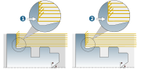

Strategy
Note
The following figures show toolpaths that were generated in High Performance Mode. A separate license is required to use this ( MAXX Machining for turning jobs). Please contact your OPEN MIND partner.
Cutting side
Outside (1) / Inside (2): The external shape of a workpiece is created by using the Outside option and the internal shape by using the Inside option.
Plane (3): Machining of the top face of the workpiece perpendicular to the axis of the turning surface.
 |
Infeed direction
To left (1) / To right (2): Machining is performed from right to left or from left to right in the direction of the axis of the turning surface.
Outside-in (3) / Inside-out (4): Machining is performed perpendicularly to the axis of the turning surface (in the X direction) from the outside inwards or from the inside outwards.
 |
Options
Falling contours allowed: Contours in X direction can be machined (1). Function disabled (2).
 |
Undercut trimming: Activate if undercut areas are not to be machined.
(1) Option is not activated, (2) Option is activated.
|  |
Radial limit / Axial limit: Limits the machining area of the tool used in the radial or axial direction. Enable the option and use the Retract plane (Z) to make it possible to drive out the tool from undercutting areas.
(1) Retract plane (Z)
(2) Clearance plane (Z)
 |
Ring removal: Remove ring chips from material breakthroughs. Finished surfaces are protected and process reliability is improved. The function is executed instead of the defined macro, and only if there are material breakthroughs. It is supported for the Axial roughing strategy in combination with all cutting side options, and for the Radial roughing strategy only in combination with the Plane machining function.
(1) Ring removal is activated, (2) Ring removal is not activated.